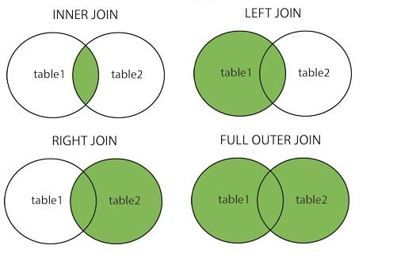

import pandas as pd
Joins#
In this subchapter, we will go over how to combine different DataFrames in pandas.
To start, let’s load in the same dataset as the first subchapter in the Pandas chapter. As a reminder, this dataset has beer sales across 50 continental states in the US. It is sourced from Salience and Taxation: Theory and Evidence by Chetty, Looney, and Kroft (AER 2009), and it includes 7 columns:
st_name: the state abbreviationyear: the year the data was recordedc_beer: the quantity of beer consumed, in thousands of gallonsbeer_tax: the ad valorem tax, as a percentagebtax_dollars: the excise tax, represented in dollars per case (24 cans) of beerpopulation: the population of the state, in thousandssalestax: the sales tax percentage
df = pd.read_csv('data/beer_tax.csv')
df
| st_name | year | c_beer | beer_tax | btax_dollars | population | salestax | |
|---|---|---|---|---|---|---|---|
| 0 | AL | 1970 | 33098 | 72.341130 | 2.370 | 3450 | 4.0 |
| 1 | AL | 1971 | 37598 | 69.304600 | 2.370 | 3497 | 4.0 |
| 2 | AL | 1972 | 42719 | 67.149190 | 2.370 | 3539 | 4.0 |
| 3 | AL | 1973 | 46203 | 63.217026 | 2.370 | 3580 | 4.0 |
| 4 | AL | 1974 | 49769 | 56.933796 | 2.370 | 3627 | 4.0 |
| ... | ... | ... | ... | ... | ... | ... | ... |
| 1703 | WY | 1999 | 12423 | 0.319894 | 0.045 | 492 | 4.0 |
| 1704 | WY | 2000 | 12595 | 0.309491 | 0.045 | 494 | 4.0 |
| 1705 | WY | 2001 | 12808 | 0.300928 | 0.045 | 494 | 4.0 |
| 1706 | WY | 2002 | 13191 | 0.296244 | 0.045 | 499 | 4.0 |
| 1707 | WY | 2003 | 15535 | 0.289643 | 0.045 | 501 | 4.0 |
1708 rows × 7 columns
However, as our purpose is to discuss combining different DataFrames, let us now also load in two additional datasets. The first dataset has the countrywide CPI data for the US, sourced from the Bureau of Labor Statistics. The second dataset has statewide CPI data for some states, sourced from The Slope of the Phillips Curve: Evidence from U.S. States by Jonathon Hazell, Juan Herreño, Emi Nakamura, Jón Steinsson (QJE 2022, link).
us_cpi = pd.read_csv('data/us_cpi.csv')
us_cpi.head()
| year | US CPI | |
|---|---|---|
| 0 | 1967 | 35.980357 |
| 1 | 1968 | 38.061600 |
| 2 | 1969 | 39.962510 |
| 3 | 1970 | 42.184851 |
| 4 | 1971 | 44.389292 |
state_cpi = pd.read_csv('data/state_cpi.csv')
state_cpi.head()
| year | state | State CPI | |
|---|---|---|---|
| 0 | 1989 | AL | 4.002484 |
| 1 | 1990 | AL | 3.549080 |
| 2 | 1991 | AL | 3.598064 |
| 3 | 1992 | AL | 1.077842 |
| 4 | 1993 | AL | 2.445113 |
To join two DataFrames, they must have atleast 1 column that shares the same data, so we can match the different rows appropriately. These columns are often called as foreign keys that map from one table to another. Both the US-wide and statewide CPI tables share the year column with the beer_tax DataFrame, and the statewide CPI table also shares the state column with the beer_tax DataFrame.
First, let’s try joining the US Inflation data with the beer tax DataFrame. We can use pd.merge() to accomplish this. A simple join is done below.
pd.merge(left = df, right = us_inf, left_on = 'year', right_on = 'year')
| st_name | year | c_beer | beer_tax | btax_dollars | population | salestax | US Inflation | |
|---|---|---|---|---|---|---|---|---|
| 0 | AL | 1970 | 33098 | 72.341130 | 2.370000 | 3450 | 4.0 | 42.184851 |
| 1 | AK | 1970 | 5372 | 13.735660 | 0.562500 | 304 | 0.0 | 42.184851 |
| 2 | AZ | 1970 | 38604 | 5.494264 | 0.180000 | 1795 | 3.0 | 42.184851 |
| 3 | AR | 1970 | 22378 | 16.632357 | 0.544900 | 1930 | 3.0 | 42.184851 |
| 4 | CA | 1970 | 363645 | 2.747132 | 0.090000 | 20023 | 5.0 | 42.184851 |
| ... | ... | ... | ... | ... | ... | ... | ... | ... |
| 1703 | VA | 2003 | 151706 | 4.093625 | 0.636000 | 7386 | 4.5 | 254.390503 |
| 1704 | WA | 2003 | 116550 | 3.769560 | 0.585652 | 6131 | 6.5 | 254.390503 |
| 1705 | WV | 2003 | 41400 | 2.569457 | 0.399200 | 1810 | 6.0 | 254.390503 |
| 1706 | WI | 2003 | 151000 | 0.934582 | 0.145200 | 5472 | 5.0 | 254.390503 |
| 1707 | WY | 2003 | 15535 | 0.289643 | 0.045000 | 501 | 4.0 | 254.390503 |
1708 rows × 8 columns
In the pd.merge() function;
the
leftparameter represents one of the DataFrames to combine, this DataFrame is referred to as the ‘left’ DataFrame.the
rightparameter represents the other DataFrame to combine, this DataFrame is referred to as the ‘right’ DataFrame.the
left_onparameter represents the column in the left DataFrame which contains the shared data.the
right_onparameter represents the column in the right DataFrame which contains the shared data.
The left_on and right_on parameters can also take in multiple columns, which comes in handy when we do the merge with statewide inflation data.
mult_col_merge = pd.merge(left = df, right = state_inf, left_on = ['st_name','year'], right_on = ['state','year'])
mult_col_merge
| st_name | year | c_beer | beer_tax | btax_dollars | population | salestax | state | State CPI | |
|---|---|---|---|---|---|---|---|---|---|
| 0 | AL | 1989 | 79990 | 22.635775 | 2.3700 | 4030 | 4.0 | AL | 4.002484 |
| 1 | AL | 1990 | 80899 | 21.475412 | 2.3700 | 4050 | 4.0 | AL | 3.549080 |
| 2 | AL | 1991 | 72921 | 20.608194 | 2.3700 | 4099 | 4.0 | AL | 3.598064 |
| 3 | AL | 1992 | 75192 | 20.005960 | 2.3700 | 4154 | 4.0 | AL | 1.077842 |
| 4 | AL | 1993 | 85380 | 19.424470 | 2.3700 | 4214 | 4.0 | AL | 2.445113 |
| ... | ... | ... | ... | ... | ... | ... | ... | ... | ... |
| 662 | WI | 1999 | 146162 | 1.032192 | 0.1452 | 5333 | 5.0 | WI | 2.412967 |
| 663 | WI | 2000 | 147700 | 0.998625 | 0.1452 | 5374 | 5.0 | WI | 3.154635 |
| 664 | WI | 2001 | 149332 | 0.970995 | 0.1452 | 5405 | 5.0 | WI | 2.186323 |
| 665 | WI | 2002 | 153076 | 0.955882 | 0.1452 | 5440 | 5.0 | WI | 1.825251 |
| 666 | WI | 2003 | 151000 | 0.934582 | 0.1452 | 5472 | 5.0 | WI | 3.145692 |
667 rows × 9 columns
Notice how the output includes both the st_name and state columns. However, these columns are always equal to each other.
(mult_col_merge['st_name'] != mult_col_merge['state']).any()
# We're checking to see if there are any values where the two columns are different
False
While the merges above were useful, they ignored a crucial part of doing merges: the how parameter.
Types of Joins#
It is very important to understand the four types of join: inner, left, right and outer.
Remember, you are merging two tables on a set of columns. It is possible that one table has a certain value for those shared columns that the other table doesn’t. For example, we have US CPI data from 1967-2023, although our beer dataset only goes from 1970-2003. So, the US CPI DataFrame has several rows which have no match in the beer tax dataframe. The differences between the types of join come from how we deal with these missing values.
An inner join only returns rows where their is a shared value in both tables, it doesn’t allow any
NaN’s to be output in the shared columns. The default join is the inner join, so it is equivalent to the merges we did before.A left join keeps all of the values from the shared column in the left table, even if they do not exist in the right table. For example, the beer tax table contains data on plenty of state/year combinations that the statewide CPI dataset doesn’t contain. Let’s do a left join on these two datasets. To specify which join type we would like to use, we only need to include a
howparameter in ourpd.merge()call.
pd.merge(left = df, right = state_inf, left_on = ['st_name','year'], right_on = ['state','year'], how = 'left')
| st_name | year | c_beer | beer_tax | btax_dollars | population | salestax | state | State CPI | |
|---|---|---|---|---|---|---|---|---|---|
| 0 | AL | 1970 | 33098 | 72.341130 | 2.370 | 3450 | 4.0 | NaN | NaN |
| 1 | AL | 1971 | 37598 | 69.304600 | 2.370 | 3497 | 4.0 | NaN | NaN |
| 2 | AL | 1972 | 42719 | 67.149190 | 2.370 | 3539 | 4.0 | NaN | NaN |
| 3 | AL | 1973 | 46203 | 63.217026 | 2.370 | 3580 | 4.0 | NaN | NaN |
| 4 | AL | 1974 | 49769 | 56.933796 | 2.370 | 3627 | 4.0 | NaN | NaN |
| ... | ... | ... | ... | ... | ... | ... | ... | ... | ... |
| 1703 | WY | 1999 | 12423 | 0.319894 | 0.045 | 492 | 4.0 | NaN | NaN |
| 1704 | WY | 2000 | 12595 | 0.309491 | 0.045 | 494 | 4.0 | NaN | NaN |
| 1705 | WY | 2001 | 12808 | 0.300928 | 0.045 | 494 | 4.0 | NaN | NaN |
| 1706 | WY | 2002 | 13191 | 0.296244 | 0.045 | 499 | 4.0 | NaN | NaN |
| 1707 | WY | 2003 | 15535 | 0.289643 | 0.045 | 501 | 4.0 | NaN | NaN |
1708 rows × 9 columns
Notice how there are so many NaN values where we have beer data but no state-wide CPI data! As a matter of fact, we’re missing statewide inflation data for over 60% of the state-year combinations in the beer tax dataset.
pd.merge(left = df, right = state_inf, left_on = ['st_name','year'], right_on = ['state','year'], how = 'left')\
['State CPI'].isna().mean()
0.6094847775175644
Similar to a left join, a right join keeps all of the values from the shared column in the right table, even if they do not exist in the left table. For example, let us do a right join with the US inflation dataset, which has more data than the beer tax dataset.
pd.merge(left = df, right = us_inf, left_on = 'year', right_on = 'year', how = 'right')
| st_name | year | c_beer | beer_tax | btax_dollars | population | salestax | US Inflation | |
|---|---|---|---|---|---|---|---|---|
| 0 | NaN | 1967 | NaN | NaN | NaN | NaN | NaN | 35.980357 |
| 1 | NaN | 1968 | NaN | NaN | NaN | NaN | NaN | 38.061600 |
| 2 | NaN | 1969 | NaN | NaN | NaN | NaN | NaN | 39.962510 |
| 3 | AL | 1970 | 33098.0 | 72.34113 | 2.3700 | 3450.0 | 4.0 | 42.184851 |
| 4 | AK | 1970 | 5372.0 | 13.73566 | 0.5625 | 304.0 | 0.0 | 42.184851 |
| ... | ... | ... | ... | ... | ... | ... | ... | ... |
| 1726 | NaN | 2019 | NaN | NaN | NaN | NaN | NaN | 358.843059 |
| 1727 | NaN | 2020 | NaN | NaN | NaN | NaN | NaN | 367.804604 |
| 1728 | NaN | 2021 | NaN | NaN | NaN | NaN | NaN | 375.806302 |
| 1729 | NaN | 2022 | NaN | NaN | NaN | NaN | NaN | 388.034036 |
| 1730 | NaN | 2023 | NaN | NaN | NaN | NaN | NaN | 403.685228 |
1731 rows × 8 columns
As expected, we have US inflation data for several years before and after the end of the beer tax dataset, resulting in NaN values for those years!
Finally, an outer join (or full join) keeps all the values from both the tables, regardless of whether or not they exist in the other table. In the example shown below, the beer tax dataset has information on plenty of state-year combinations not present in the statewide dataset, but the statewide dataset has data upto 2017 for some states, while the beer tax dataset ends at 2003 for all states.
pd.merge(left = df, right = state_inf, left_on = ['st_name','year'], right_on = ['state','year'], how = 'outer')
| st_name | year | c_beer | beer_tax | btax_dollars | population | salestax | state | State CPI | |
|---|---|---|---|---|---|---|---|---|---|
| 0 | AL | 1970 | 33098.0 | 72.341130 | 2.37 | 3450.0 | 4.0 | NaN | NaN |
| 1 | AL | 1971 | 37598.0 | 69.304600 | 2.37 | 3497.0 | 4.0 | NaN | NaN |
| 2 | AL | 1972 | 42719.0 | 67.149190 | 2.37 | 3539.0 | 4.0 | NaN | NaN |
| 3 | AL | 1973 | 46203.0 | 63.217026 | 2.37 | 3580.0 | 4.0 | NaN | NaN |
| 4 | AL | 1974 | 49769.0 | 56.933796 | 2.37 | 3627.0 | 4.0 | NaN | NaN |
| ... | ... | ... | ... | ... | ... | ... | ... | ... | ... |
| 2211 | NaN | 2013 | NaN | NaN | NaN | NaN | NaN | WI | 1.336107 |
| 2212 | NaN | 2014 | NaN | NaN | NaN | NaN | NaN | WI | 1.655367 |
| 2213 | NaN | 2015 | NaN | NaN | NaN | NaN | NaN | WI | 0.277752 |
| 2214 | NaN | 2016 | NaN | NaN | NaN | NaN | NaN | WI | 0.111245 |
| 2215 | NaN | 2017 | NaN | NaN | NaN | NaN | NaN | WI | 2.100405 |
2216 rows × 9 columns
Finally, here are a couple of interesting visualizations of the different types of joins.
